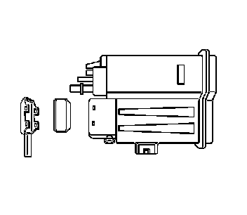

Evaporative Canister Filter: Service and Repair
Evaporative Emission Canister Filter Replacement
Removal Procedure

1. Raise and support the vehicle. Refer to Lifting and Jacking the Vehicle (Service and Repair) .
2. Using a 90 degree pick, disengage the lower filter cover clips.
3. Insert a flat-bladed tool between the filter cover and canister, and push up to disengage the upper clips.
4. Remove and discard the evaporative emission (EVAP) canister filter cover.
5. Remove and discard the EVAP canister filter.
6. Clean the inside of the EVAP canister filter housing with a clean shop towel.
Installation Procedure
1. Insert a NEW EVAP canister filter into the EVAP canister.
Important: Ensure the NEW seal is properly seated into the NEW cover.
2. Install a NEW EVAP canister filter cover seal to a EVAP NEW canister cover.
3. Snap the EVAP canister filter cover onto the EVAP canister.
4. Lower the vehicle.